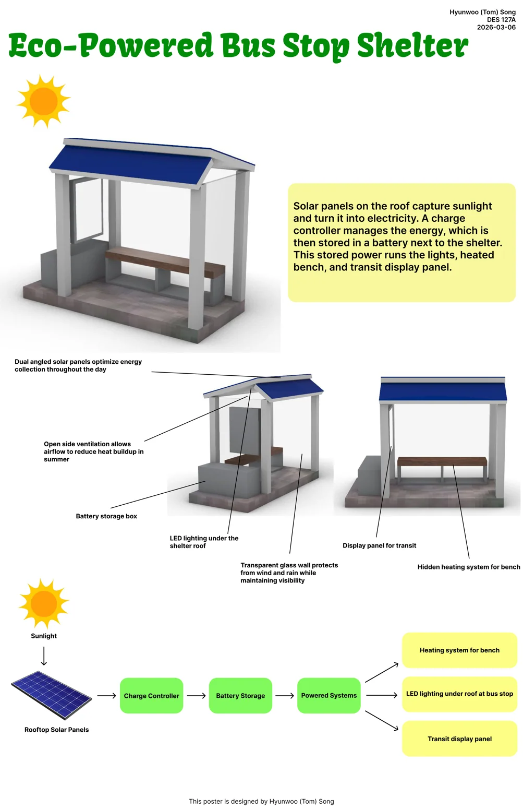
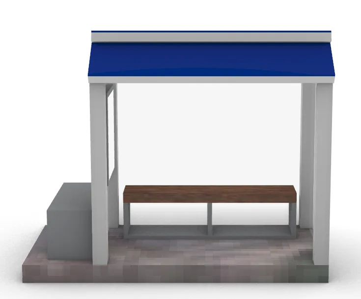
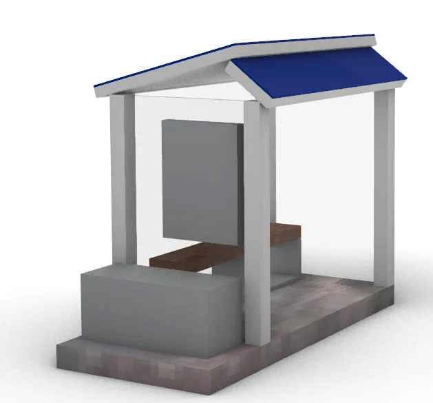
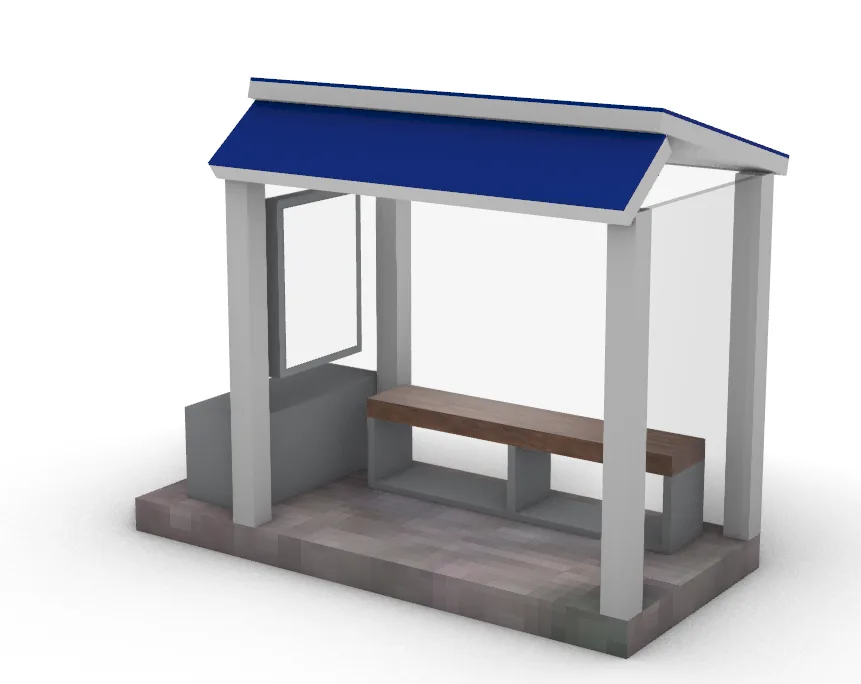

DES 127A · SUSTAINABLE DESIGN · COURSEWORK
Eco-Powered Bus Stop Shelter
A low-carbon public transit shelter concept combining solar energy, environmental comfort, and rider information.

01 / CONCEPT
Designing for a low-carbon city
This proposal rethinks a small piece of urban infrastructure: the bus stop. It considers solar panels, battery storage, LED lighting, a heated bench, and a real-time transit display as a connected design system. These are proposed functions, not measured performance claims.



02 / SYSTEMS THINKING
Make energy flows understandable
The final poster explains the proposed path from sunlight through rooftop panels, a charge controller, and battery storage to the shelter’s amenities. The accompanying report elaborates on the design rationale and context.
ORIGINAL MATERIALS